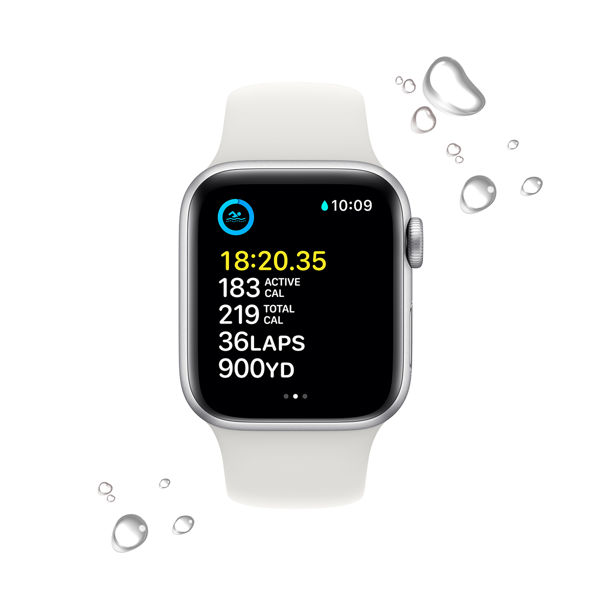

Можна закохатися.
З багатьох причин.

Основні функції для підтримання здоров’я, безпеки й активного способу життя.

Захист від води
Основні характеристики
Відповідайте на дзвінки
та повідомлення просто
із зап’ястя
До 20% швидший
за попередній
Apple Watch SE
Розширені функції безпеки,
зокрема Виявлення падіння,
Сигнал SOS і Виявлення аварій
Відстежуйте свою активність
протягом дня з Apple Watch,
а потім переглядайте
тенденції в додатку «Фітнес»
на iPhone
Покращений додаток
«Тренування» з
удосконаленими підходами
до вправ
Отримуйте сповіщення
про високий, низький і
порушений серцевий ритм
Слухайте улюблену музику,
подкасти й аудіокниги
(для використання в моделях
GPS)
Захист від води
Відстеження сну дає
змогу дізнатися,
скільки часу ви перебували
у фазах швидкого,
повільного та глибокого сну
watchOS 9 підтримує
покращений додаток
«Тренування», новий додаток
«Ліки», фази сну та дає змогу
краще відстежувати ритм
серця